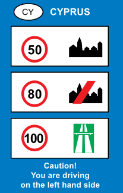

Loading...

General speed limits
ℹ Information Signs
📖 Description
This sign informs drivers of the general national speed limits in Cyprus: 50 km/h in built‑up areas, 80 km/h on rural roads, and 100 km/h on motorways. These limits apply unless a different speed is indicated by road signs.